Essence de l’Instant
1 500 €
10 h de reportage
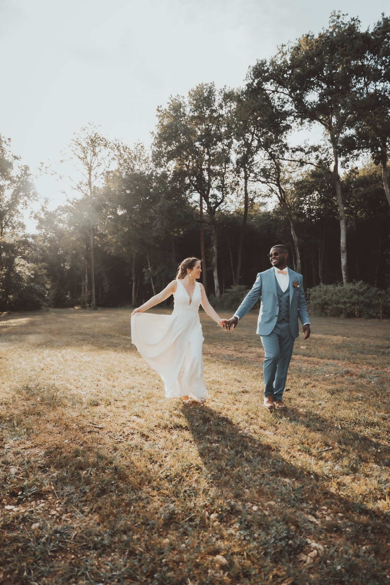
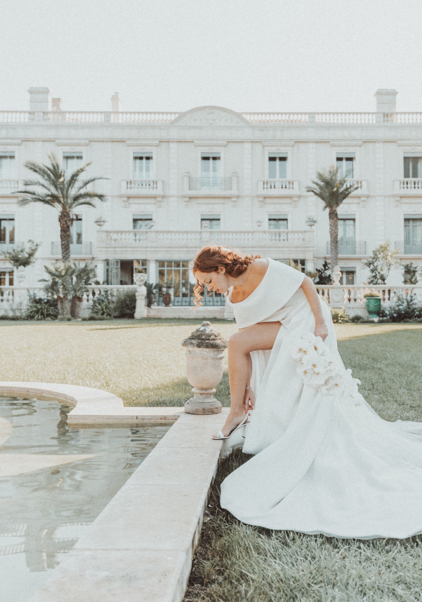
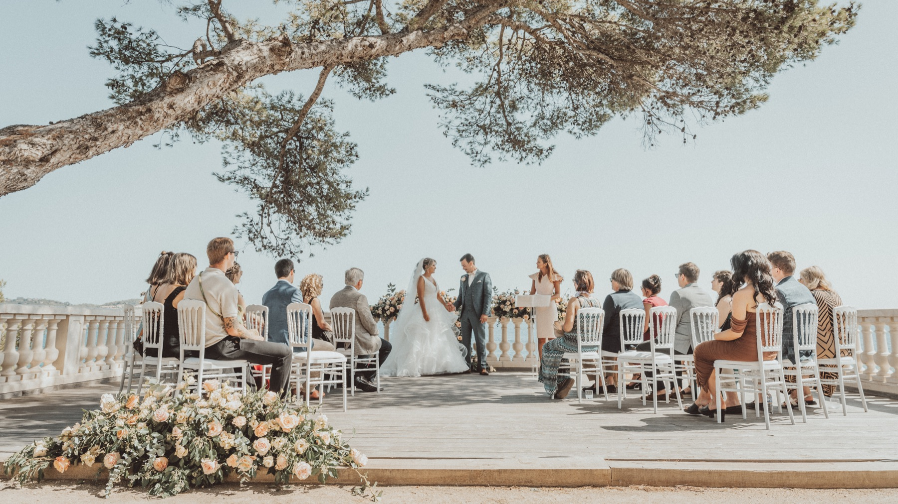
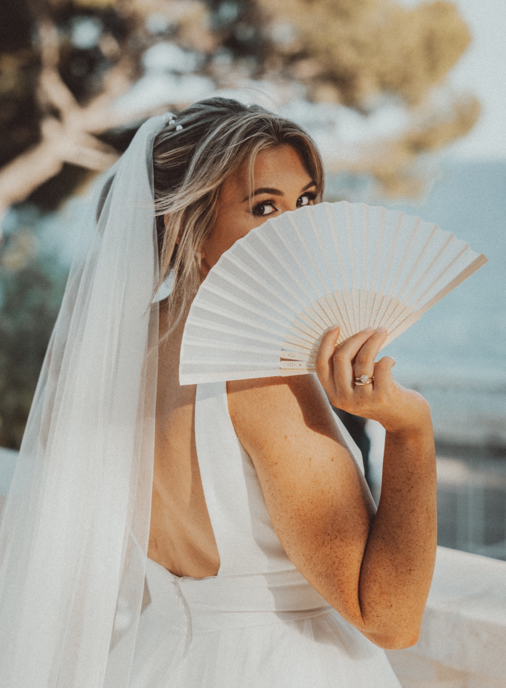
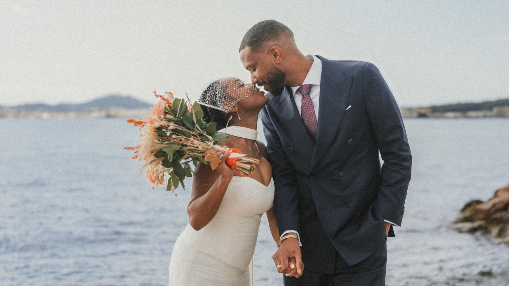
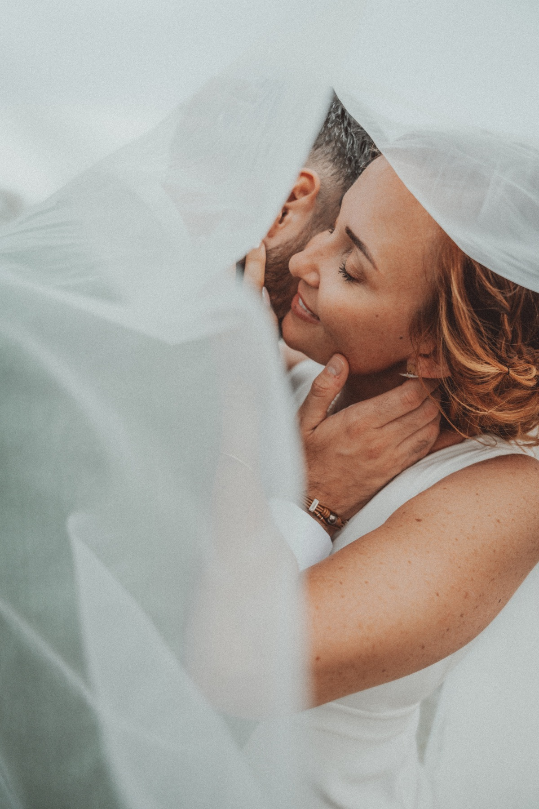
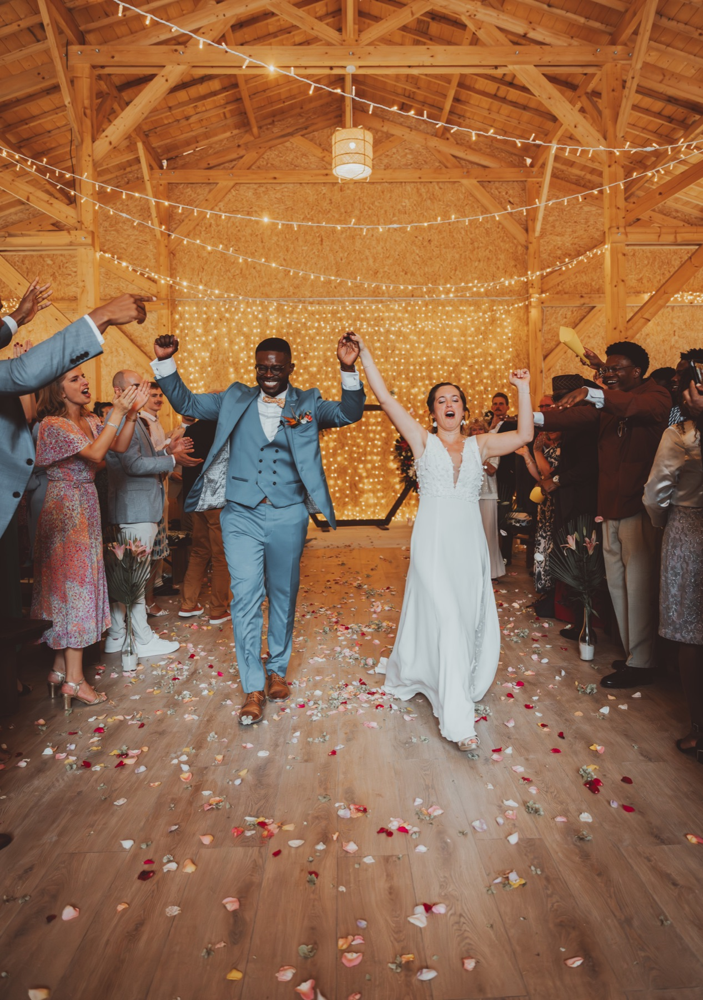
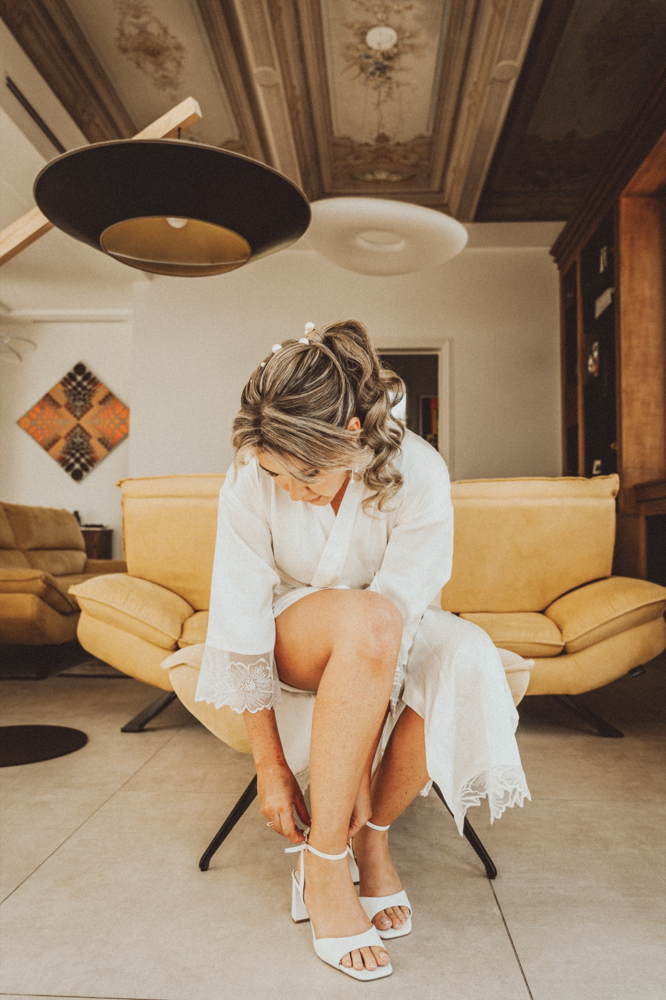
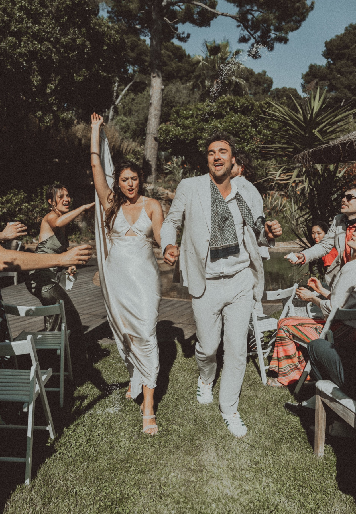
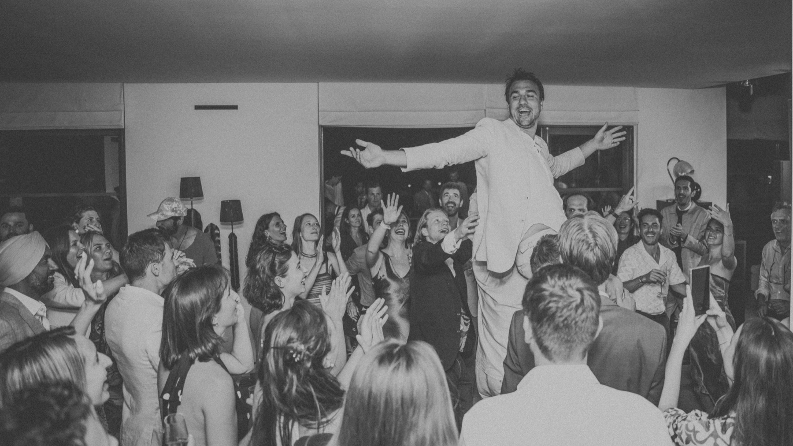
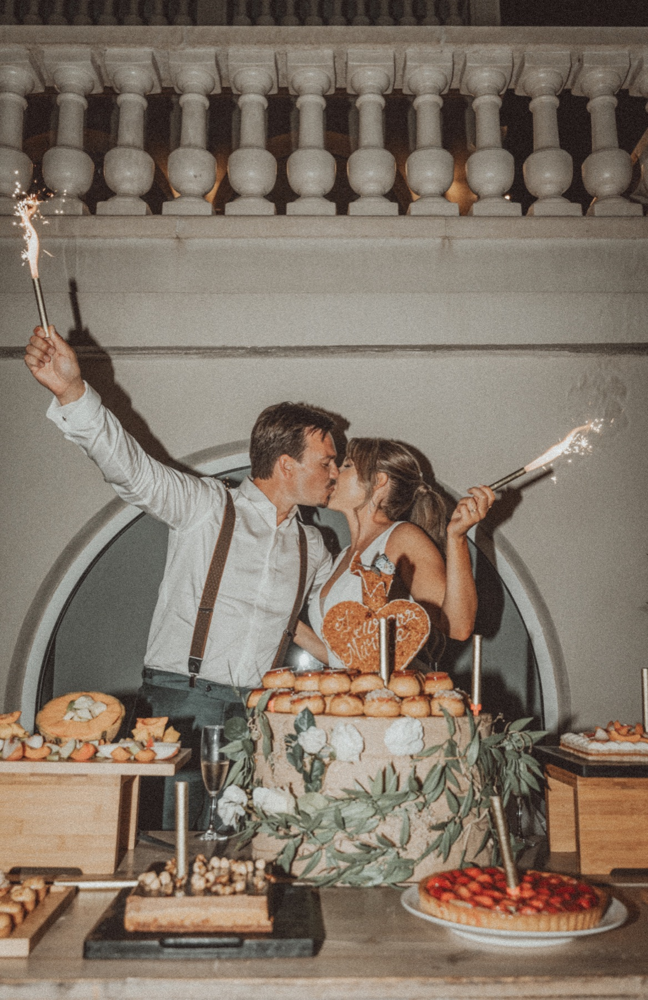
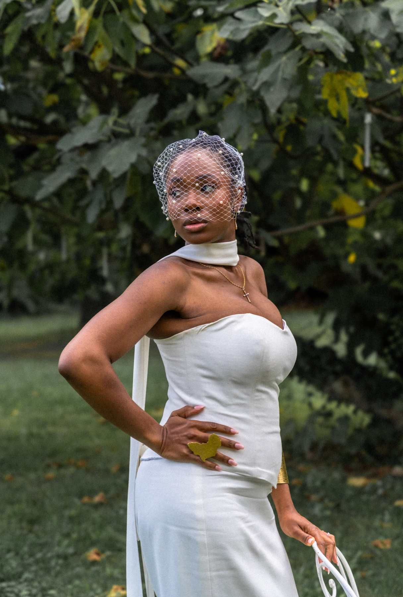
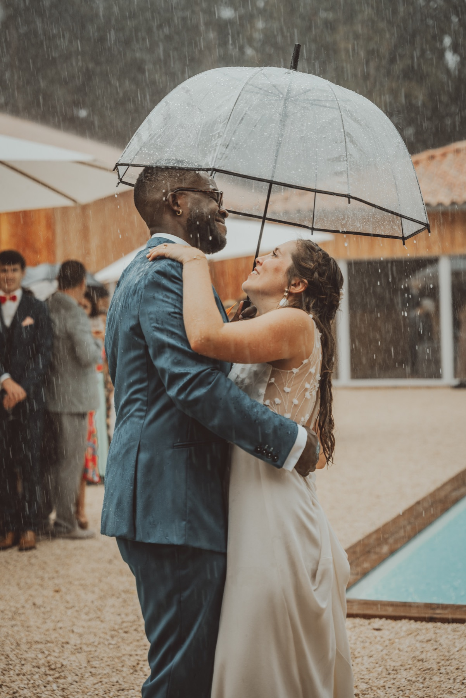
Provence, Côte d’Azur & ailleurs
ICAROS · PHOTOGRAPHE DE MARIAGE
Parlez moi de votre mariage ↗★★★★★ 5/5 · 23 avis sur Mariages.netJe suis Allan, photographe de mariage à Toulon depuis 2022. Je privilégie la lumière naturelle et les photos spontanées.
Je vous accompagne des préparatifs à la soirée, avec discrétion.
Voir les photos →Allan
Toutes les formules incluent les photos retouchées et une galerie en ligne privée.
1 500 €
10 h de reportage
2 000 €
12 h de reportage
3 000 €
12 h de reportage
« La qualité des photos est exceptionnelle »
Lire l’avis complet ↗« Tout était parfait du début à la fin. »
Lire l’avis complet ↗« Des Photos vraiment incroyables ! »
Lire l’avis complet ↗« Photos sublimes ! »
Lire l’avis complet ↗« Photos incroyables! »
Lire l’avis complet ↗Extraits exacts d’avis publiés sur Mariages.net.
Lire les 23 avis complets ↗Indiquez votre date et votre lieu pour connaître mes disponibilités et obtenir un tarif.
Écrivez-moi ici ↗